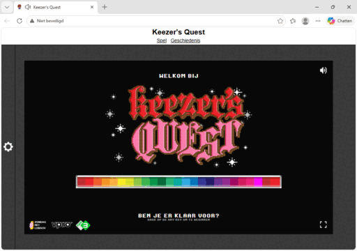
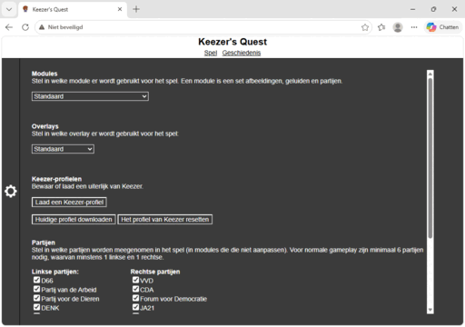
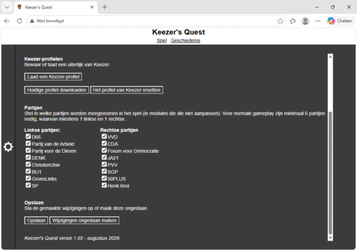
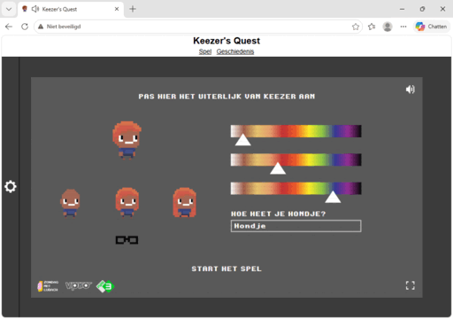
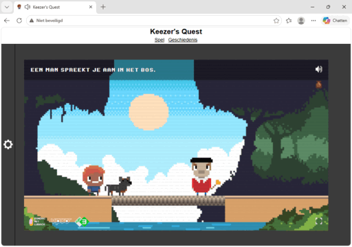
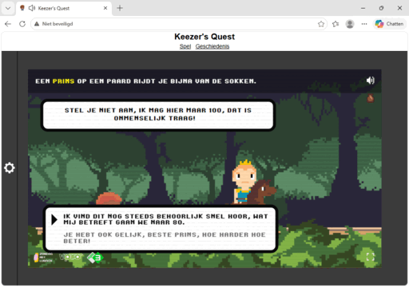
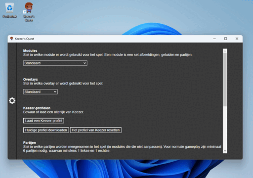
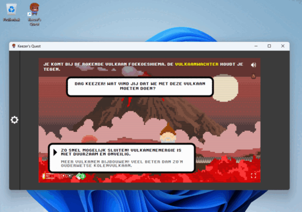

Keezer's Quest (Arjen Lubach)
Keezer's Quest in Kamergotchi (2021-heden)
Keezer's Quest in Kamergotchi
Keezer's Quest 1.x (2021, 2026-heden)
Keezer's Quest 1.00
Keezer's Quest 1.01
Keezer's Quest 1.02
Overzicht
Alle spelversies bij elkaar
Keezer's Quest (Arjen Lubach) (2021)
Keezer's Quest (Arjen Lubach) (2021)
Op 8 februari 2021 introduceerde Arjen Lubach Keezer's Quest, een stemwijzer in de vorm van een spelletje (https://www.youtube.com/watch?v=_tqgvvHzmoA).Het was te spelen op https://keezersquest.nl. In tegenstelling tot Kamergotchi, is het nooit offline gehaald en het is tegenwoordig te vinden op https://zmlnostalgie.nl/keezersquest. Je volgt Keezer, die door een sprookjesbos loopt en allerlei dillemma's moet oplossen om te kijken bij welk gilde hij zich het beste aan kan sluiten.
Op een technisch niveau is iedere keer een keuze tussen 2 partijen en zijn er twee types ronde: Eerst wordt geteld hoeveel linkse en hoeveel rechtse partijen er zijn, wordt er steeds iemand uit de kleinste groep tegen een willekeurige uit de andere groep gezet en wordt diegene die je niet kiest dan afgestreept. Daarna worden er uit de overgebleven partijen steeds 2 genomen en wordt de verliezer afgestreept totdat er maar één overblijft. Als je bijvoorbeeld gedurende het hele spel steeds naar die malle Henk Trol luistert, kom je gegarandeerd bij zijn gilde uit. De uitkomsten werden ook verzameld door Zondag met Lubach, maar daar is voor zover bekend nooit meer iets mee gedaan.


Keezer's Quest in Kamergotchi (2021-heden)
Keezer's Quest in Kamergotchi (2021-heden)
Omdat Henk Trol toch wel een meme was en de artiest Leaf of Steel zelfs een metal-remix van zijn themaliedje heeft gemaakt (https://www.youtube.com/watch?v=fKJlfgbUmCw), is hij als easter egg toegevoegd aan Kamergotchi Online met versie 2.12 (uitgekomen op 30 september 2021).Iedere 1 april staat hij bovenaan de balk en is de remix van zijn liedje de achtergrondmuziek. Als die speelt, doet hij een dansje.

Keezer's Quest in Kamergotchi (2021-heden)
Keezer's Quest 1.00 (2-3-2021)
Op 1 maart 2021 deed ik een website-download van Keezer's Quest voor als die net als Kamergotchi zou verdwijnen.Ik haalde het doorgeven van de uitkomst naar Zondag met Lubach er uit, verborg de informatie voor iPhones omdat die verder niet relevant was en verpakte het als een Electron-programma.


Keezer's Quest 1.01 (18-3-2021)
Vervolgens deed ik een vroege poging om het spel te modden, maar de code was vrij lastig te lezen omdat het heel anders was opgezet dan mijn projecten en ik had niet zoveel ideeën. Deze versie is nooit afgemaakt.

Keezer's Quest 1.02 (30-8-2026)
In de zomer van 2026 besloot ik om het modden van Keezer's Quest nieuw leven in te blazen. Dit is geen doorwerking van versie 1.01, maar opnieuw begonnen vanaf 1.00.De CRT-overlay kan worden uitgezet, alle cookies zijn omgezet naar één cookie in een formaat dat lijkt op Kamergotchi Online, Keezer heeft een standaard uiterlijk dat lijkt op het spelicoon (en uiterlijken zijn te downloaden en laden), partijen zijn aan of uit te zetten en modules met nieuwe scènes of personages zijn mogelijk (maar nog niet gemaakt buiten een module waar het themaliedje van Henk Trol is vervangen door de metalversie). Naast de website, is deze versie ook terug op Electron.
Nog een andere belangrijke wijziging is dat het frame van de overlay weg is gehaald omdat als de pixels niet lekker afrondden, het spel er een beetje onderuit kwam. Hierdoor zie je nu iets meer van de omgeving dan oorspronkelijk de bedoeling was.

















